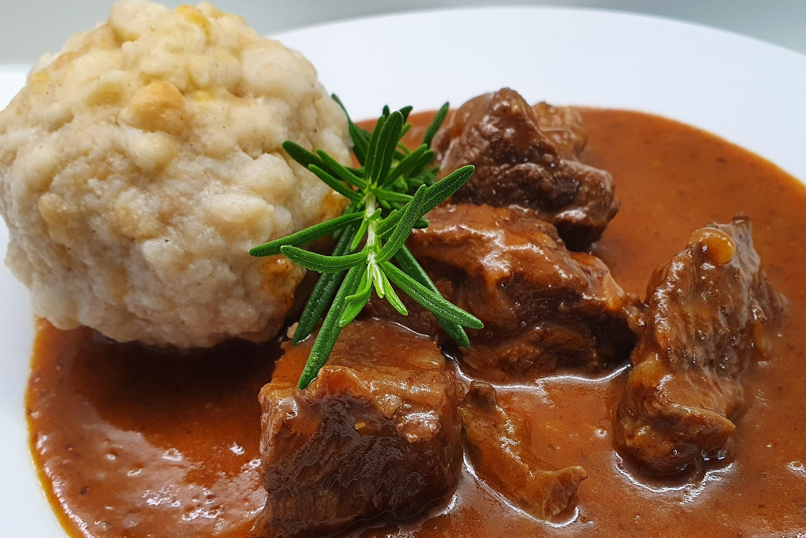

Goulash
back

Description
Ingedients
- Stewing beef
- Yellow onion
- Pork lard
- Carawway seeds
- Salt
- Black pepper
- Paprika
- Tomato paste
- Bay leaves
- Water
- Dried marjoram
- Fresh garlic
- Flour
Steps
- Peel the onion and chop it roughly. Cut the beef into 1-1.½-inch pieces.
- Melt the lard or vegetable oil over medium-high heat in a pot with a thick bottom (I use a heavy iron cast Dutch oven). Fry onions until almost brown. Stir frequently to avoid burning. Finally, add the crushed caraway seeds and stir for another minute.
- Add beef chunks, season with salt, and fry them from all sides until a golden brown crust is created. Expect the meat releases some juices when fried. Stir frequently, and scrape off the burnt residue on the bottom of the pot with a wooden spatula. If necessary, reduce the heat or add a spoon or two of water.
- Turn the stove on medium heat, and add ground pepper, sweet paprika, and tomato paste. Fry for 1 minute while stirring. The base can’t get burnt, or else the goulash will taste bitter. Add 1-2 spoons of water to prevent burning.
- Pour in water so the meat is almost covered. Add bay leaves. Bring to a boil, reduce the heat to a minimum, cover with a lid and allow the beef to simmer for 2–2.5 hours or until soft.
- Once the beef cubes are tender, add a little flour to thicken the stew. This will help create a smoother, more cohesive sauce.
Take off the pot's lid. Using a small sieve, carefully dust the surface of the stew with a tablespoon of flour. Do not stir. Cover with the lid and leave to cook for a further 15 minutes. Remove the lid and stir. The sauce will be just thick enough!
- Remove bay leaves, add crushed garlic, dried marjoram, and stir. Season with salt to your liking. Cover with a lid and let it rest off heat for 10 minutes.
Serve the goulash in a deep bowl with a piece of bread or warm slices of dumplings arranged on the side of a plate.